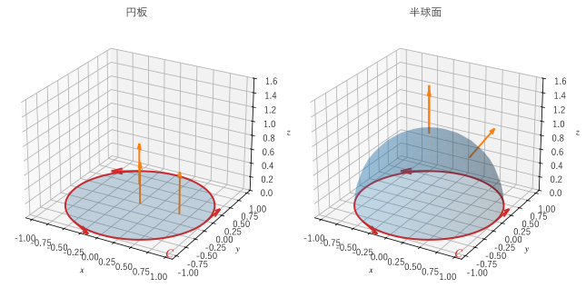

第 15 章 ストークスの定理
第 13 章のグリーンの定理（循環形）は、平面の領域の境界に沿った循環が、内部の回転の重積分に等しいことを表していた。この章で扱うストークスの定理は、これを空間内の曲がった曲面に広げたものである。この章では、定理の内容と直観的な説明、曲面と境界の向きの関係、座標によらない回転の定義を説明し、同じ境界を持つ曲面なら結果が同じになることを数値で確かめる。応用として、アンペールの法則とファラデーの法則の微分形を導き、ケルビンの循環定理を紹介する。
ストークスの定理
空間内の向きの付いた曲面 \(S\) と、その境界の閉曲線 \(\partial S\) を考える。ベクトル場 \(\bm{F}\) の成分が、\(S\) とその境界を含む範囲で連続な偏導関数を持つとき、次の式が成り立つ。これをストークスの定理という。
左辺は境界に沿った循環（第 11 章）、右辺は回転 \(\nabla \times \bm{F}\) の曲面を通る流束（第 12 章）である。言葉で書くと、次のようになる。
境界に沿った循環 ＝ 曲面を貫く渦の合計
曲面 \(S\) が \(xy\) 平面上の領域 \(D\) で、法線ベクトルが \(+\bm{e}_z\) のときは \(d\bm{S} = \bm{e}_z \, dx \, dy\) となり、(19) はグリーンの定理（循環形）そのものになる。
曲面と境界の向き
(19) の両辺は、どちらも向きによって符号が変わる。左辺は境界をたどる向き、右辺は曲面の法線ベクトルの向き（どちらを表とするか）で決まる。この 2 つの向きは、次の右ねじの規則で組み合わせる。
境界をたどる向きに右ねじを回したとき、ねじが進む向きを曲面の法線ベクトルの向きとする。
同じことを、次のように言い換えることもできる。
法線ベクトルの向きに頭を向けて境界の上を歩くとき、曲面が常に左手側にある向きに歩く。
右手の親指を法線ベクトルの向きに向けたとき、残りの 4 本の指が曲がる向きに境界をたどる。
たとえば、\(xy\) 平面上の単位円を上から見て反時計回りにたどるなら、その円を境界とする曲面の法線ベクトルは上向き（\(z\) が増える向き）に取る。図 21 は、同じ単位円を境界とする円板と半球面に、この規則で向きを付けたものである。


図 21 同じ境界 \(C\)（反時計回り）を持つ円板と半球面と、上向きの法線ベクトル
注釈
ストークスの定理を使える曲面は、表と裏の区別が付けられる曲面、つまり向きを決められる（向き付け可能な）曲面である。メビウスの帯のように表と裏の区別がない曲面では、法線ベクトルの向きを曲面全体で連続に選べないので、定理は使えない。
微小な長方形による説明
第 7 章では、法線ベクトルが \(\bm{n}\) の微小な長方形の周を、右ねじの規則に従う向きに 1 周する循環が、近似的に \((\nabla \times \bm{F}) \cdot \bm{n} \, \Delta S\) になることを見た（\(\Delta S\) は長方形の面積）。
曲面 \(S\) を、ほぼ平らな微小な長方形（に近い四辺形）に分割する。各長方形の周を、右ねじの規則に従う向きに 1 周する循環を足し合わせると、グリーンの定理のときと同じように、隣り合う長方形が共有する辺の寄与は打ち消し合う（図 19 の長方形が、曲面に沿って曲がっていると考えればよい）。残るのは曲面の境界に沿った循環だけである。一方、各長方形の循環 \((\nabla \times \bm{F}) \cdot \bm{n} \, \Delta S\) の和は、回転の流束 \(\iint_S (\nabla \times \bm{F}) \cdot d\bm{S}\) になる。
隣り合う長方形で共有する辺が打ち消し合うためには、すべての長方形で法線ベクトルの向きがそろっている（曲面全体で表と裏が決まっている）必要がある。曲面が向きを決められるものでなければならないのは、このためである。
座標によらない回転の定義
第 14 章で発散を「単位体積あたりの流出量」として定義したのと同じように、ストークスの定理を使うと、回転を座標によらずに定義できる。
点 \(\mathrm{P}\) を通り、単位法線ベクトルが \(\bm{n}\) の小さな平らな面 \(S\)（たとえば円板）を考え、その面積を \(|S|\) とする。\(S\) を点 \(\mathrm{P}\) に縮める極限を取ると
となる。右辺は「\(\bm{n}\) に垂直な面内での、単位面積あたりの循環」である。
この式は、回転ベクトルの \(\bm{n}\) 方向の成分を与える。\(\bm{n}\) の向きをいろいろに変えると、循環が最大になる向きがある。その向きが回転ベクトルの向きであり、そのときの単位面積あたりの循環が回転ベクトルの大きさである。つまり、回転ベクトルは「その点での渦の軸の向きと強さ」を表す。第 7 章の羽根車のたとえで言えば、羽根車が最も速く回る軸の向きが回転ベクトルの向きである。
数値で確かめる
場を \(\bm{F} = (-y, x, xz)\) とし、境界 \(C\) を \(xy\) 平面上の単位円（上から見て反時計回り）とする。回転は
である。左辺の循環は、\(\bm{r}(t) = (\cos t, \sin t, 0)\) とすると \(\bm{F} \cdot \bm{r}'(t) = \sin^2 t + \cos^2 t = 1\) なので \(2\pi\) になる。
右辺は、境界が \(C\) である 3 つの曲面で計算する。どの曲面も、法線ベクトルは右ねじの規則に従って上向きに取る。
円板 \(z = 0\)（\(x^2 + y^2 \le 1\)）
半球面 \(x^2 + y^2 + z^2 = 1\)（\(z \ge 0\)）
回転放物面 \(z = 1 - x^2 - y^2\)（\(z \ge 0\)）
曲面をパラメーター表示 \(\bm{r}(u, v)\) で表すと、回転の流束は \(\iint (\nabla \times \bm{F}) \cdot (\bm{r}_u \times \bm{r}_v) \, du \, dv\) である（第 12 章）。サンプルでは \(\bm{r}_u\) と \(\bm{r}_v\) を中心差分で近似し、dblquad で積分する。
38def rot_flux(surface: Surface, u_range: tuple[float, float], v_range: tuple[float, float]) -> float:
39 """曲面 r(u, v) を通る ∇×F の流束 ∬(∇×F)·(r_u × r_v) du dv を求める.
40
41 r_u と r_v は中心差分で近似する。r_u × r_v の向き（どちらが表か）は、
42 パラメーターの取り方で決まるので、境界の向きと右ねじの関係になるように選んでおく。
43 """
44 h = 1e-6
45
46 def integrand(v: float, u: float) -> float:
47 r_u = (surface(u + h, v) - surface(u - h, v)) / (2 * h)
48 r_v = (surface(u, v + h) - surface(u, v - h)) / (2 * h)
49 return float(rot_field(surface(u, v)) @ np.cross(r_u, r_v))
50
51 return float(integrate.dblquad(integrand, u_range[0], u_range[1], v_range[0], v_range[1])[0])
F = (-y, x, xz)、境界 C = xy 平面上の単位円（反時計回り）
境界 C の線積分 : 6.283185
円板を通る回転の流束 : 6.283185
半球面を通る回転の流束 : 6.283185
放物面を通る回転の流束 : 6.283185
厳密値 2π : 6.283185
境界の線積分と、3 つの曲面を通る回転の流束がすべて \(2\pi\) で一致している。
サンプルの全体：ch15_stokes_check.py
境界が同じなら曲面によらない
前節の結果は偶然ではない。ストークスの定理の左辺は境界 \(C\) だけで決まるので、\(C\) を境界とする曲面であれば、どの曲面を選んでも右辺は同じ値になる。
このことは、ガウスの発散定理からも確かめられる。\(C\) を境界とする 2 つの曲面 \(S_1, S_2\)（向きはどちらも右ねじの規則に従う）を考える。たとえば \(S_1\) を円板、\(S_2\) を半球面とすると、2 つを合わせたものは立体（半球）\(V\) を囲む閉曲面になる。\(V\) の外向きの法線ベクトルは、半球面では上向きで \(S_2\) の向きと一致し、円板では下向きで \(S_1\) の向きと逆になる。したがって
となる。最後の等号は、第 8 章の公式 \(\nabla \cdot (\nabla \times \bm{F}) = 0\)（回転の発散は 0）による。つまり、「回転の場は発散がない」ことと「回転の流束は境界だけで決まる」ことは、同じ事実を微分と積分の言葉で表したものである。
実際の計算では、この性質を使って、境界が同じでできるだけ簡単な曲面（平らな円板など）を選ぶと楽になる。
応用 1：アンペールの法則
定常な電流がつくる磁場では、閉曲線 \(C\) に沿った磁束密度 \(\bm{B}\) の循環が、\(C\) を貫く電流 \(I\) に比例する。\(\mu_0\) を真空の透磁率として
が成り立つ。これをアンペールの法則（積分形）という。電流の向きと \(C\) をたどる向きは、右ねじの規則で組み合わせる。
電流が電流密度 \(\bm{J}\) で分布しているとき、\(C\) を貫く電流は、\(C\) を境界とする曲面 \(S\) を通る \(\bm{J}\) の流束 \(I = \iint_S \bm{J} \cdot d\bm{S}\) である。左辺にストークスの定理を使うと
となる。これが任意の曲面 \(S\) で成り立つので、被積分関数どうしが等しく
を得る。これがアンペールの法則の微分形である。「電流は磁場の渦の源である」と読める。
例として、\(z\) 軸に沿った無限に長い直線電流 \(I\) を考える。対称性から、磁場は \(z\) 軸を中心とする円に沿った向き（円柱座標の \(\bm{e}_\phi\) 方向）を向き、大きさは \(z\) 軸からの距離 \(\rho\) だけで決まる。半径 \(\rho\) の円に沿った循環は \(B(\rho) \cdot 2\pi\rho\) なので、アンペールの法則から
となる。この場は、第 16 章で扱う自由渦と同じ形をしている。
応用 2：ファラデーの電磁誘導の法則
磁束が時間変化すると、閉回路に起電力が生じる。閉曲線 \(C\) に沿った電場の循環（起電力）は、\(C\) を境界とする曲面 \(S\) を貫く磁束の時間変化に負号を付けたものに等しい。
これをファラデーの電磁誘導の法則（積分形）という。曲面が固定されていれば、右辺の時間微分は積分の中に入れられる。左辺にストークスの定理を使い、任意の曲面で成り立つことから
を得る。これがファラデーの法則の微分形である。アンペールの法則とファラデーの法則は、第 14 章のガウスの法則とともに、第 17 章でマクスウェル方程式としてまとめる。
応用 3：ケルビンの循環定理（概要）
流体力学では、流れの速度 \(\bm{v}\) の回転を渦度 \(\bm{\omega} = \nabla \times \bm{v}\) という。ストークスの定理から、閉曲線 \(C\) に沿った速度の循環 \(\Gamma = \oint_C \bm{v} \cdot d\bm{r}\) は、\(C\) を境界とする曲面を貫く渦度の流束に等しい。
ケルビンの循環定理は、粘性のない流体（完全流体。理想流体ともいう）で、密度が圧力だけで決まり、外力が重力のようにポテンシャルを持つ場合に、「流体とともに動く閉曲線に沿った循環 \(\Gamma\) は時間がたっても変わらない」ことを主張する。証明には流体の運動方程式（オイラー方程式）が必要なので、ここでは結果だけを示す。
この定理とストークスの定理を組み合わせると、次のことが分かる。はじめに渦度が 0（渦なし）の流れは、どの閉曲線でも循環が 0 である。循環は保存されるので、時間がたっても循環は 0 のままであり、ストークスの定理から渦度も 0 のままである。つまり、静止した状態から動き出した完全流体の流れは、渦なしの流れであり続ける。これが、第 17 章で扱うポテンシャル流の考え方の根拠になる。実際の流体には粘性があるので、物体の表面の近くなどでは渦が生まれる。
この章のまとめ
ストークスの定理は、曲面の境界に沿った循環が、曲面を通る回転の流束に等しいことを表す。グリーンの定理を空間内の曲面に広げたものである。
境界をたどる向きと曲面の法線ベクトルの向きは、右ねじの規則で組み合わせる。曲面は向きを決められるものでなければならない。
回転は「単位面積あたりの循環」として、座標によらずに定義できる。回転ベクトルは渦の軸の向きと強さを表す。
境界が同じなら、回転の流束はどの曲面で計算しても同じになる。これは \(\nabla \cdot (\nabla \times \bm{F}) = 0\) の積分版である。
アンペールの法則とファラデーの法則の積分形にストークスの定理を使うと、微分形 \(\nabla \times \bm{B} = \mu_0 \bm{J}\)、\(\nabla \times \bm{E} = -\partial \bm{B} / \partial t\) が得られる。